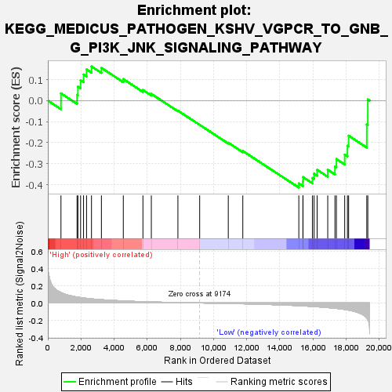
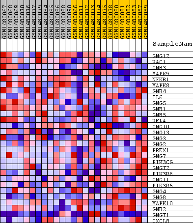
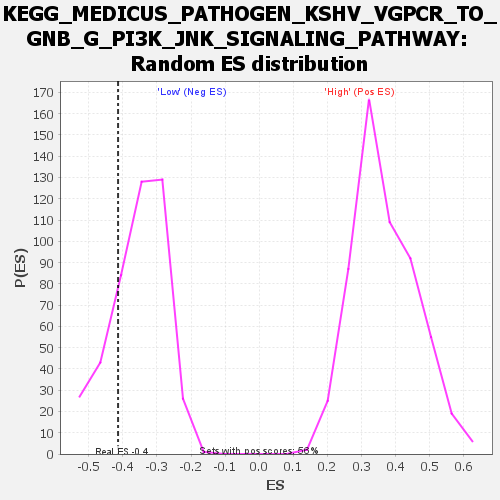

| Dataset | WG6v3.MRPL3.cls#High_versus_Low.MRPL3.cls#High_versus_Low_repos |
| Phenotype | MRPL3.cls#High_versus_Low_repos |
| Upregulated in class | Low |
| GeneSet | KEGG_MEDICUS_PATHOGEN_KSHV_VGPCR_TO_GNB_G_PI3K_JNK_SIGNALING_PATHWAY |
| Enrichment Score (ES) | -0.41405863 |
| Normalized Enrichment Score (NES) | -1.1712265 |
| Nominal p-value | 0.21004567 |
| FDR q-value | 1.0 |
| FWER p-Value | 1.0 |

| SYMBOL | TITLE | RANK IN GENE LIST | RANK METRIC SCORE | RUNNING ES | CORE ENRICHMENT | |
|---|---|---|---|---|---|---|
| 1 | GNG12 | GNG12 | 793 | 0.121 | 0.0345 | No |
| 2 | RAC1 | RAC1 | 1763 | 0.069 | 0.0274 | No |
| 3 | GNB3 | GNB3 | 1816 | 0.067 | 0.0665 | No |
| 4 | MAPK9 | MAPK9 | 1977 | 0.062 | 0.0972 | No |
| 5 | NFKB1 | NFKB1 | 2156 | 0.058 | 0.1242 | No |
| 6 | MAPK8 | MAPK8 | 2337 | 0.054 | 0.1485 | No |
| 7 | GNB4 | GNB4 | 2635 | 0.047 | 0.1628 | No |
| 8 | IL6 | IL6 | 3234 | 0.038 | 0.1558 | No |
| 9 | GNG5 | GNG5 | 4555 | 0.024 | 0.1025 | No |
| 10 | GNB1 | GNB1 | 5740 | 0.015 | 0.0507 | No |
| 11 | GNB5 | GNB5 | 6247 | 0.012 | 0.0320 | No |
| 12 | RELA | RELA | 7851 | 0.005 | -0.0477 | No |
| 13 | GNG10 | GNG10 | 9165 | 0.000 | -0.1154 | No |
| 14 | GNG13 | GNG13 | 10891 | -0.006 | -0.2006 | No |
| 15 | GNG3 | GNG3 | 11768 | -0.009 | -0.2398 | No |
| 16 | GNG2 | GNG2 | 15148 | -0.032 | -0.3942 | Yes |
| 17 | PREX1 | PREX1 | 15395 | -0.034 | -0.3855 | Yes |
| 18 | GNG7 | GNG7 | 15401 | -0.034 | -0.3644 | Yes |
| 19 | PIK3CG | PIK3CG | 15967 | -0.040 | -0.3684 | Yes |
| 20 | GNGT2 | GNGT2 | 16066 | -0.042 | -0.3475 | Yes |
| 21 | PIK3R6 | PIK3R6 | 16253 | -0.044 | -0.3295 | Yes |
| 22 | GNG11 | GNG11 | 16894 | -0.054 | -0.3289 | Yes |
| 23 | PIK3R5 | PIK3R5 | 17328 | -0.061 | -0.3129 | Yes |
| 24 | GNG4 | GNG4 | 17417 | -0.063 | -0.2782 | Yes |
| 25 | GNG8 | GNG8 | 17917 | -0.075 | -0.2569 | Yes |
| 26 | MAPK10 | MAPK10 | 18083 | -0.081 | -0.2150 | Yes |
| 27 | GNB2 | GNB2 | 18154 | -0.083 | -0.1671 | Yes |
| 28 | GNGT1 | GNGT1 | 19250 | -0.177 | -0.1132 | Yes |
| 29 | CXCL8 | CXCL8 | 19312 | -0.196 | 0.0057 | Yes |

